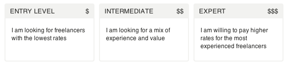
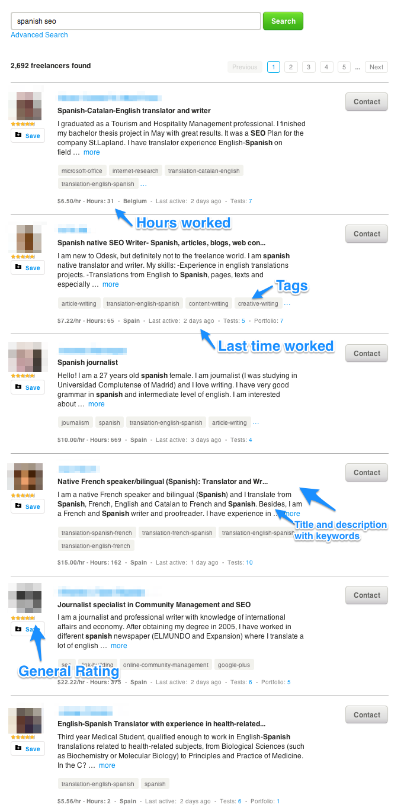

After working +1200 hours in oDesk to learn by doing stuff related with online marketing & web development I wrote about it in a post. Wired & BuzzFeed found it cool enough.
In 2012 I moved to Frankfurt to work with some online businesses, and from there I moved to Brussels in 2013, where I live currently.
In 2014, while learning Ruby on Rails, I launched petithacks a website where I and others can collect al the tricks that startups and online businesses do to get more of your time, of your clicks, of your attention.
If you pass by Brussels, let's have a Rochefort javier@petithacks.com
After working +1200 hours in oDesk
In 2012, I worked +1200 hours on remote through oDesk. This is what I learnt.
Sending job applications
No matter if you are applying for a job in the real life or through Internet, one point that everyone is going to agree is that cover letters matter as much as a good cv.
If you are applying for non-technical job post, your potential contractor is likely to receive a lot of applications. Lots of them. The easiest the task to accomplish, the higher is going to be the number of applicants.You need to be catchy/interesting enough to make your non-yet contractor open your application. You can stand out your application by:
By budget. What I consider a smart move to avoid waste of time for contractors and employers, oDesk have implemented a new section where you can determine how much are you willing to pay. For some contractors, this will be the most and more valuable criteria when they decide to hire you.

Post a Job - Malditointer.net
By using a catchy message in the xxx characters that he will see in his web interface. ‘Dear hiring manager:‘ is one of the worst sentences you can use to start your cover letter. (Tweet it)
'Dear hiring manager' - Malditointer.net
Your work quality & previous ratings. The most valuable imho when I have hired someone.
Ranking in the internal search engine
One of my main concerns, even more working in such a field like SEO, was to rank in a good position when a contractor, instead of posting a job, was manually looking for someone that could help him. ‘Spanish SEO‘, ‘SEO‘, ‘español‘ were some of the terms that, in that moment, were more interesting for me to rank for.
I don’t keep a track of what were the changes that I made into my profile, but I got a table of what were my SERPs in the oDesk internal search engine in a timeframe of 3 months for certain keywords:
#
First Name
Last Name
Username
1
Mark
Otto
@mdo
2
Jacob
Thornton
@fat
3
Larry
the Bird
@twitter
2012
March
June/July
October
spanish seo 13 8 11
seo 37 24 18
español 21 14 9
Showing 1 to 3 of 3 entries
Almost 1 year since I stopped working in that platform, I have tried to find my profile by using the same keywords, and results are a bit disturbing (for me). I’m not able to find any evidences of my profile in the first 20 pages of results (no matter if I’m logged in or logged out – I thought there was a kind of filtering to take out your own profile if you are looking for it, while you are logged in your account, but it’s not. I’m able to find it by using ‘Javier S.’)
Just by taking this little research about internal SERPs, what I’m totally sure is that one of the most important factors to rank for oDesk internal search engine is the last time you were actively working in the site. At least, that’s what you can see that all the contractors have in common if you make a search.
‘Being actively working is one of the main criterias to rank in the internal search engine of oDesk’ (Tweet it)

Factors in oDesk Internal Search Engine - Malditointer.net
I don’t have (yet) a totally clear idea of what other criterias oDesk is taking in account when it comes to show these results. Nonetheless, I’m going try to find it out by making some tests. If the forthcoming results might be something in what you are interested in, signup here and I will email you once I got them.
Your email:
A/B testing my profile image
I look younger than my age. It won’t be the first time if I’m being asked me for my ID before buying some beers. I’m 26 years old but but my face says ‘I’m a teenager, don’t hire me cause I’m irresponsibely young‘. So, I looked for a way of giving a first responsible, image of guy who is going to get-work-done impression. Thanks we are in the Internet, and I didn’t need any surgery. Just a fake beard with Photoshop.
A/B testing photo profile in oDesk - Malditointer.net
WIth my photo in the variation A, I had a 12% of replies to my job appications.
With my fake beard in the variation B, I had a 35% of replies to my job applications.
‘A fake beard on my oDesk photo profile gave me a 23% of replies’ (Tweet it)
Improving the number of replies for an application was really important for me, cause that means that you are in the radar of your potentital employer, and the fact that you have more opportunities to interact directly about his job post.
*Stuff to take into account about this a/b test:
If you have not never before worked in oDesk, there is a job application quota. You have a maximum of job applications that you can send per week. You have to be really selective if you don’t want to run out of opportunities to apply for jobs you are interested in. You will find more info about it here.
This experiment was carried through 2 contiguous weeks.
Hourly jobs = ratings & feedback vs. Fixed price-projects = Fast money
If you have a vast experience in the non-virtual world, but you can not prove it in the virtual world, you are going to be just another job applicant in a long long list. I started taking fixed-price projects by the fact that I didn’t know how it worked the time tracker (at that moment) and I had the impression that I was going to be really nervous if I had some kind of time presure. Certainly I lost money n my first contracts, if you conceive money as time.
Income in euros
Hourly vs Fixed-price contracts incomes
Source: http://malditointer.net
Hourly income
Fixed-price income
Tracked hours
Jan
Feb
Mar
Apr
May
Jun
Jul
Aug
Sep
Oct
Nov
Dec
0
500
1000
1500
2000
2500
3000
*Tracked hours ‘units’ is not ‘euros’ but ‘hours’. Feel free to help me to edit it if you know how. Element to add is a different tooltip for data series 3. More about how it works in the docs from Highcharts.
Taking out all my eggs from the same basket
In the month of June 2012, I decided to take a change. Working on remote on my own +40 hours/week was not something I was really looking for the rest of my life, and even not the rest of the year. I looked for other alternatives that I could combine with some hours working on remote.
My final decission was to move to Frankfurt, since I had 2 startups interested in having me working part-time for the (I met them through oDesk) and they were offering me fixed-price contracts. At the same time I started working for Airbnb as freelance translator. The fact of not having to accomplish a certain amount of hours can be easily checked in the graph, where my incomes increased x2 for fixed-price projects at the same time that I was able to work almost the same amount of hours.
Tracked time + ratings based on my work with previous employers were/are/will be my best CV
In some of the job interviews I had the last months of 2012, I included a direct link to my oDesk profile as part of my cv. It was shocking for some of the job interviewers as that was the first time they saw something like that. In real life, you can get referred by other person that know you are good at doing whatever you do, but in my case were comments & feedback displaying in a public profile.
In case you are interested in, this is my oDesk profile (without any latest changes made on it).
I’m planning to extend this post with:
more resources,
pricing strategies for fixed projects when you are just a newbie in the platform,
advices and tips based on my +1200 h, working on remote.
No bullshit, no cheap talk, just proven stuff that worked for me. In case you were interested, just leave me your email.